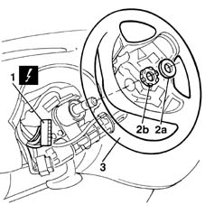

4110A10 steering wheel - r+r for replacement or checks
- Path
- Procedures > 41 STEERING > 4110 STEERING CONTROL AND LINKAGE > 4110A steering control > 4110A10 steering wheel - r+r for replacement or checks
- Kind
- repair procedure (removal / refitting; the operation number is the code)
- Applies to
- all engines; all production periods
- Interactive page
- https://sloeber94.github.io/elrnDB-fMltpl/en/#/2891672
Applies to: all engines; all production periods
 Removing
Removing
 Refitting
RefittingDisconnect the battery negative (-) terminal.
Position the front wheels perfectly straight and mark the position of the steering wheel in relation to the upper casing.
- 5550B10 horn control on steering wheel - r+r
1. Disconnect the electrical connection for the horn.
 | Name | Connector |
|---|---|---|
1 | High-tone horn |
2. Remove the protective seal (2a) and undo the fixing nut (2b).
3. Remove the steering wheel.

Applies to: all engines; all production periods
Refitting
RemovingPlace the steering wheel in the special housing, checking that the marks made previously on the steering wheel and the casing are aligned.
Tighten the steering wheel fixing nut to torque.
 | Fastening | Component | Ø | Value (daNm) |
|---|---|---|---|---|
- | Nut | STEERING WHEEL | M16 x 1.5 | 5 |
Position the protective seal.
Connect the electrical connection for the horn.
- 5550B10 horn control on steering wheel - r+r
Connect the negative (-) battery terminal.